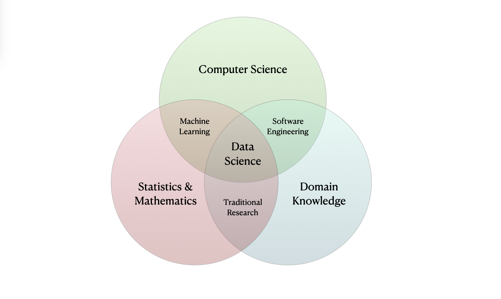
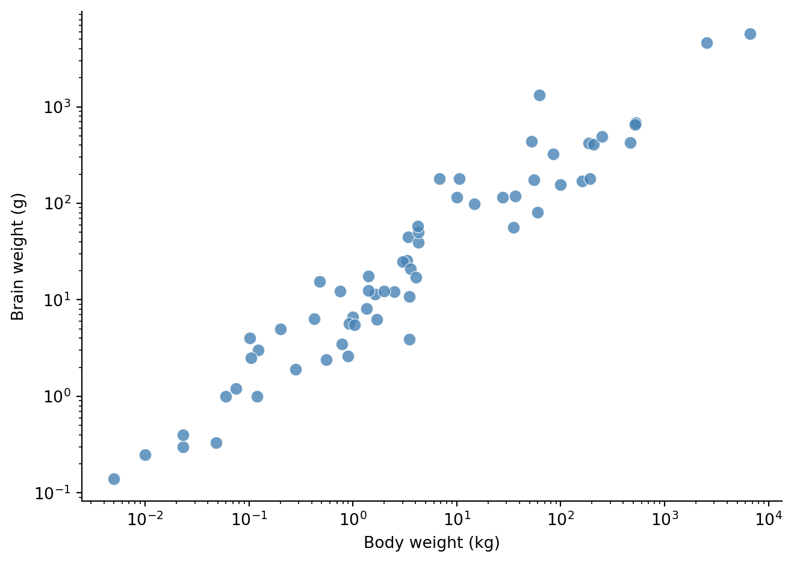

import pandas as pd
import matplotlib.pyplot as pltData Science Fundamentals
Introduction to the terminology and concepts of data science and the data science lifecycle.
ImportantLearning Objectives
- Understand the terminology of data science.
- Understand the data science lifecycle.
In this section we shall be using the following python packages:
pandas- This package is used to manage and manipulate tabular data.
matplotlib- This package is used to create visualizations of data.
Don’t worry if you do not yet know how to use these packages or understand the included code chunks. This chapter is intended to introduce you to the terminology and concepts of data science. We shall cover how to perform the analysis in later chapters.
Data Science
What is Data Science?
Data science is a nascent field that encompasses a wide range of activities that involve uncovering insights from quantitative information. Data scientists typically combine specific interests (“domain knowledge”, e.g. biology) with computation, mathematics, statistics and probability to contribute to data-driven insights to their communities.
These fields all intersect and distinguishing between them is not always straightforward. For example, my field of study is applied mathematics and statistics and my research involves implementing deep neural networks using data science techniques.

What is Data?
ImportantData
Data is (digital) information (such as measurements or statistics) used as a basis for reasoning, discussion, or calculation.
Raw data is often difficult or even impossible to interpret, and it is the role of a data scientist to interpret this information and use it to assess beliefs.
Terminology
A dataset is a collection of observations taken on observational units, consisting of values measured on a set of variables.
An observational unit is the entity that is being measured. An observation is a collection of values (e.g. a vector) measured on various attributes (variables).
For example, consider the following cats dataset provided by Waqar Ali on Kaggle.
cats = pd.read_csv('assets/data/cats.csv')
cats.head()| Breed | Age (Years) | Weight (kg) | Color | Gender | |
|---|---|---|---|---|---|
| 0 | Russian Blue | 19 | 7 | Tortoiseshell | Female |
| 1 | Norwegian Forest | 19 | 9 | Tortoiseshell | Female |
| 2 | Chartreux | 3 | 3 | Brown | Female |
| 3 | Persian | 13 | 6 | Sable | Female |
| 4 | Ragdoll | 10 | 8 | Tabby | Male |
The columns represent variables and the rows represent observations. Here the observational units are cats and the variables are breed, age, weight, color and gender. In this example the variables are intuitive but in cases where they are not (either due to complexity or vague labels) it is customary to include a variable dictionary to help readers interpret the variables.
| Variable | Description |
|---|---|
| Breed | The breed of the cat. |
| Age (Years) | The age of the cat in years. |
| Weight (kg) | The weight of the cat in kilograms. |
| Color | The color of the cat. |
| Gender | The gender of the cat. |
Variable Classification
Variables can be classified into different types. At the highest level of classification we have categorical and numerical variables:
- Categorical variables are variables that take on a finite number of values, such as gender or breed.
- Numerical variables are variables that take on a continuous range of values, such as age or weight.
Categorical variables can be further classified into nominal and ordinal variables:
- Nominal variables are variables that take on values that are not ordered, such as gender or breed.
- Ordinal variables are variables that take on values that are ordered, such as age or weight.
Numerical variables can be further classified into discrete and continuous variables:
- Discrete variables are variables that take on a countable number of values, such as the number of cats in a household.
- Continuous variables are variables that take on a continuous range of values, such as age or weight.

We note that it is possible to change the type of a variable, typically by encoding it as a set of dummy variables or binning it into a finite number of categories. For example, suppose we have the continuous variable age in years. We can transform this into a categorical variable by binning it into a finite number of categories, such as child, adult and elderly.
cats['age_group'] = pd.cut(
cats['Age (Years)'],
bins=[0, 1, 10, 20],
labels=['child', 'adult', 'elderly'],
right=False
)
cats.head()| Breed | Age (Years) | Weight (kg) | Color | Gender | age_group | |
|---|---|---|---|---|---|---|
| 0 | Russian Blue | 19 | 7 | Tortoiseshell | Female | elderly |
| 1 | Norwegian Forest | 19 | 9 | Tortoiseshell | Female | elderly |
| 2 | Chartreux | 3 | 3 | Brown | Female | adult |
| 3 | Persian | 13 | 6 | Sable | Female | elderly |
| 4 | Ragdoll | 10 | 8 | Tabby | Male | elderly |
When preparing data it is good practice to include details about variable categories and any transformations applied to the data in the variable dictionary to help future readers interpret the data.
| Variable | Description | Type | Transformation |
|---|---|---|---|
| Breed | The breed of the cat. | Categorical, Nominal | None |
| Age (Years) | The age of the cat in years. | Numerical, Continuous | None |
| Weight (kg) | The weight of the cat in kilograms. | Numerical, Continuous | None |
| Color | The color of the cat. | Categorical, Nominal | None |
| Gender | The gender of the cat. | Categorical, Nominal | None |
| Age Group | The age group of the cat. | Categorical, Ordinal | Binned into child, adult and elderly |
Data Science Lifecycle
Generally speaking, conducting data science involves answering questions of interest using data. The specifics of this process can vary between fields and communities, however the underlying steps are generally the same. These steps are commonly referred to as the data science lifecycle.
ImportantData Science Lifecycle
The data science lifecycle is an iterative, multi-step process used to extract actionable insights from data. In this course, these steps are defined as:
- Hypothesize:
- Formulate a question of interest.
- Collect:
- Sample data or acquire data ‘second-hand’.
- Understand your dataset (origins, limitations etc.).
- Prepare and Explore:
- Clean up and organize your data.
- Explore the data to understand its structure and patterns.
- Analyze and Interpret:
- Analyze the data to understand its structure and patterns.
- Interpret the results of the analysis.
- Communicate the results clearly and effectively.

Note that these steps are not necessarily sequential. For example, in some cases you may start with some data set which you need to prepare and explore before you can formulate a question of interest. In other cases you may have a question of interest and need to collect data to answer it. The lifecycle is more of a guide than a strict sequence but it provides a useful framework to help structure your approach.
As we walk through the 7 steps of the data science lifecycle we consider a simple example to help develop our intuition for the process.
1. Hypothesize
The first step in the data science lifecycle is to formulate a question of interest. This question should be specific and answerable with the data at hand. For our example, we might be intersted in how an animal’s brian scales with their body. To make this question specific to our data set we propose the following hypothesis:
What is the relationship between an animal’s brain and body weight?
It might sound simple, but the relationship is thought to contain clues about evolutionary patterns pertaining to intelligence.
2. Collect
In this case, we won’t directly gather data. Instead, we’ll acquire a publicly available dataset comprising average body weight (kg) and brain weight (g) for 62 mammals.
bb_weights = pd.read_csv('assets/data/mammals.csv').iloc[:, 0:3]
bb_weights.head()| species | body_weight | brain_weight | |
|---|---|---|---|
| 0 | African elephant | 6654.000 | 5712.0 |
| 1 | African giant pouched rat | 1.000 | 6.6 |
| 2 | Arctic fox | 3.385 | 44.5 |
| 3 | Arctic ground squirrel | 0.920 | 5.7 |
| 4 | Asian elephant | 2547.000 | 4603.0 |
We note that the body_weight column is in kilograms and the brain_weight column is in grams.
3. Acquaint
Since we didn’t collect this data ourselves, we aquaint ourselves with its origins to understand potential limitations. The data was originally collected by Allison and Cicchetti (1976) and only contains mammalian data, no information about birds, fish, reptiles, etc. The species themselves weren’t chosen to represent mammalia hence we probably shouldn’t seek to generalize. Furthermore the values are aggregated data, not individual level.
We conclude that we can only explore the question narrowly for this particular group of animals using the data at hand and have insufficient data to generalize.
4. Tidy
This dataset is already impeccably neat and doesn’t require any preparation. We will spend significant time in subsequent lectures studying how to tidy and organize data in python. For now, we will just check the dimensions and see if any values are missing.
# dimensions?
print("Dimensions: ", "\n", bb_weights.shape)
# missing values?
print("Missingness analysis: ", "\n", bb_weights.isna().sum(axis = 0))Dimensions:
(62, 3)
Missingness analysis:
species 0
body_weight 0
brain_weight 0
dtype: int64The dataset has 62 rows and 3 columns. There are no missing values.
5. Explore
A key step in the data science lifecycle is to explore the data, known as exploratory data analysis (EDA). EDA is a iterative process that involves visualizing and summarizing the data to gain a better understanding of its structure and patterns. We shall go into more detail in subsequent lectures.
Let’s start by producing summary statistics for the data. These are useful for getting a sense of the data’s distribution and relationships. We also compute the correlation between body weight and brain weight.
# summary statistics
print("Summary statistics: ", "\n", bb_weights.describe())
# correlation
print("Correlation: ", "\n", bb_weights[["body_weight", "brain_weight"]].corr())Summary statistics:
body_weight brain_weight
count 62.000000 62.000000
mean 198.789984 283.134194
std 899.158011 930.278942
min 0.005000 0.140000
25% 0.600000 4.250000
50% 3.342500 17.250000
75% 48.202500 166.000000
max 6654.000000 5712.000000
Correlation:
body_weight brain_weight
body_weight 1.000000 0.934164
brain_weight 0.934164 1.000000From our summary statistics we see that the average body weight is 2000 kg and the average brain weight is 1000 g. We also see that the standard deviation of body weight is 1000 kg and the standard deviation of brain weight is 100 g. The correlation between body weight and brain weight is 0.93, which is a very strong positive correlation and suggests that there is a roughly linear relationship between body weight and brain weight.
Keeping things simple, we also make a scatter plot with log scale axes (we will discuss such transformations in our section on exploratory data analysis).
fig, ax = plt.subplots()
ax.scatter(bb_weights['body_weight'], bb_weights['brain_weight'],
color='steelblue', edgecolors='white', linewidths=0.5,
alpha=0.8, s=60)
ax.set_xlabel('Body weight (kg)')
ax.set_ylabel('Brain weight (g)')
ax.spines[['top', 'right']].set_visible(False)
ax.set_xscale('log')
ax.set_yscale('log')
plt.tight_layout()
plt.show()
From Figure 1 we see evidence of this linear relationship on the log scale.
6. Analyze
Next we proceed to analyze the data using the results from our exploration. We noted a roughly linear relationship on the log scale in our scatter plot. We can formalize this relationship using the following model \[ \log(\text{brain}) = \alpha\log(\text{body})+c. \]
Intuitively, this model suggests that the brain weight changes in proportion to a power of body weight. We can estimate the parameters of this model using linear regression, covered in a future lecture.
7. Interpret
How do we interpret the parameters of this model? After some algebraic manipulation we can rewrite the above model as \[ \begin{aligned} \exp(\log(\text{brain})) & = \exp(\alpha\log(\text{body})+c) \\ \text{brain} & = \exp(c) \cdot\exp(\log(\text{body}^\alpha)) \\ \implies \text{brain} & \propto \text{body}^\alpha, \end{aligned} \]
up to some constant of proportionality, which is a power-law relationship. This leads us to draw the following conclusion:
For these 62 mammals, brain weight changes in proportion to a power of body weight.
Note that this conclusion is not very strong. Our data set is relatively small, is not representative of mammals in general and is aggregated data, not individual level. Nevertheless, we have demonstrated how the data science lifecycle can be used to structure our thinking and guide our analysis.
References
Allison, T., and D. V. Cicchetti. 1976. “Sleep in Mammals: Ecological and Constitutional Correlates.” Science 194 (4266): 732–34. https://doi.org/10.1126/science.982039.